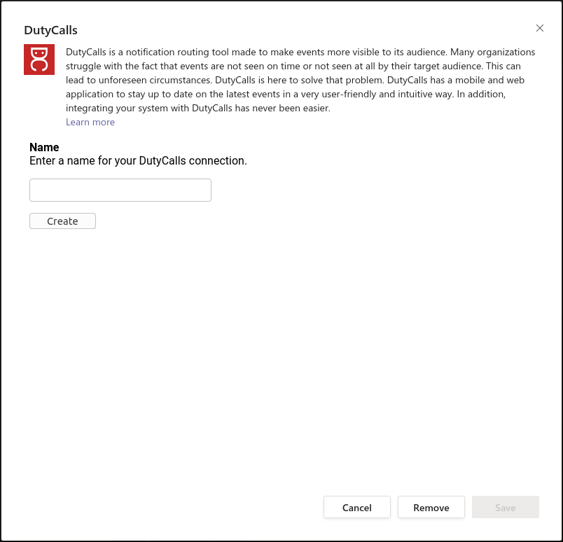
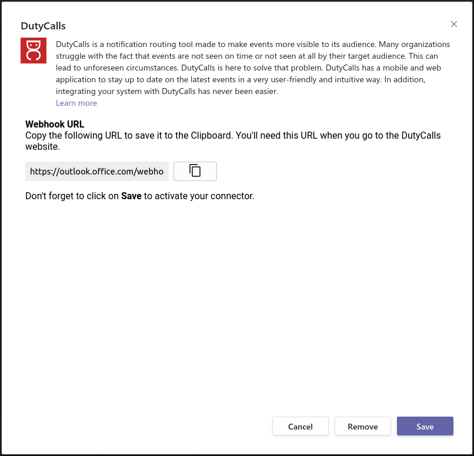

Integrations
Overview
All kinds of applications are or can be integrated with DutyCalls. This way we can provide your organization with as much functionality as possible without having to stop using your current applications. Below you can see how you can integrate your favorite application(s) with DutyCalls.
Slack
Do you want to stay informed of the latest DutyCalls updates directly in Slack? Make use of the ready-made Slack integration.
Initial Configuration
To begin the configuration and eventually make use of the Slack integration, you will need to map your DutyCalls workspace to your Slack workspace.
- Head over to Workspace and select the Integrations tab.
-
Select the Add button next to Slack.
-
On the Slack configuration dialog, click on the Add to Slack button to link your DutyCalls workspace to your Slack workspace. Linking your DutyCalls workspace to your Slack workspace guarantees that the DutyCalls bot is available in Slack.

-
After clicking the button, you will be redirected to a Slack authorization screen where you can authorize the DutyCalls Slack App to perform the following actions:

Click on the Allow button to authorize. When this step is finished, you are able to start adding the Slack integration to your DutyCalls channels.
Add the Slack integration to a channel
Now that a Slack workspace has been mapped to your DutyCalls workspace, something else needs to be done before messages (event updates) are posted to Slack and that is adding a channel integration within DutyCalls.
-
Navigate to Channels > Click the Settings button of your desired channel > Integrations tab > Click on the + button to add a new integration.
-
Select Slack from the dropdown list. Enter a friendly Name for the integration. This could be anything, as long as it clarifies what integration is involved. After that, select the correct Slack Workspace and the desired Slack Channel. Lastly, select the events from which you want to receive updates for.

The configuration has now been completed. Event updates related to the configured DutyCalls channel will be posted in the selected Slack channel.
Microsoft Teams
Do you want to stay informed of the latest DutyCalls updates directly in Microsoft Teams? Make use of the ready-made Microsoft Teams integration.
Initial Configuration
To begin the configuration and eventually make use of the Microsoft Teams integration, you will need to add the DutyCalls connector to your desired Microsoft Teams channel.
-
Head over to the desired channel in Microsoft Teams, click on the ellipses next to it and select Connectors from the dropdown.

-
A new dialog will appear. Now search for the DutyCalls connector and click on the Add button next to it.
-
On the DutyCalls connector configuration page, enter a name for your DutyCalls connection and click on the Create button.
 -
Then copy the Webhook URL. (You will need this later) 
Click on the Save button to activate the connection. When this step is finished, you are able to start adding the Microsoft Teams integration to your DutyCalls channels.
Add the Microsoft Teams integration to a channel
Now that the DutyCalls connector has been configured on a Microsoft Teams channel, something else needs to be done before messages (event updates) are posted to Microsoft Teams and that is adding a channel integration within DutyCalls.
-
Navigate to Channels > Click the Settings button of your desired channel > Integrations tab > Click on the + button to add a new integration.
-
Select Microsoft Teams from the dropdown list. Enter a friendly Name for the integration. This could be anything, as long as it clarifies what integration is involved. After that, enter the URL you copied earlier. Lastly, select the events from which you want to receive updates for.

The configuration has now been completed. Event updates related to the configured DutyCalls channel will be posted in the configured Microsoft Teams channel.
Generic webhook
Do you have another application that you would like to integrate with DutyCalls? Add a Generic Webhook!
Add the Generic Webhook to a channel
The only requirement for this form of integration is that you have a valid webhook URL to which DutyCalls can post event updates.
-
Navigate to Channels > Click the Settings button of your desired channel > Integrations tab > Click on the + button to add a new integration.
-
Select Generic Webhook from the dropdown list. Enter a friendly Name for the integration. This could be anything, as long as it clarifies what integration is involved. After that, enter the webhook URL. Lastly, select the events from which you want to receive updates for.

-
DutyCalls event updates will be send using a
HTTPPOSTrequest, with as body aJSONobject with the following format:
{
"title": "Title of the event message",
"text": "A message describing the event.",
"url": "A HTTPS URL that points towards the relevent page in the application."
}
The configuration has now been completed. Event updates related to the configured DutyCalls channel will be posted to the configured application.